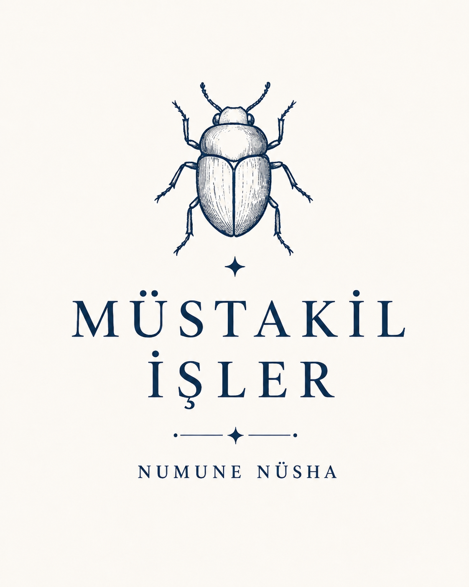
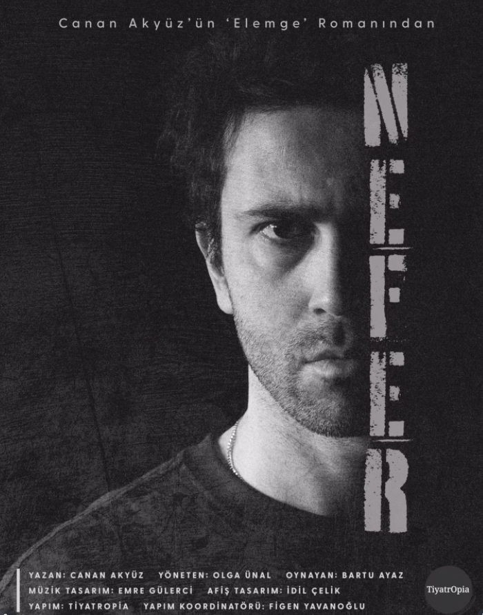
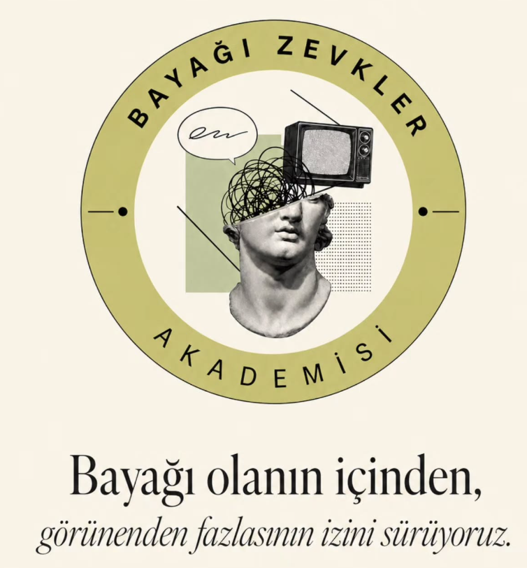

Bağımsız işler üretiyoruz.


Canan Akyüz'ün "Elemge" romanından sahneye taşınan Nefer, tek kişilik oyunuyla içe dönük ve çarpıcı bir yüzleşme anlatıyor.
"Bayağı olanın içinden, görünenden fazlasının izini sürüyoruz." Popüler kültürü, gündelik zevkleri ve arka planlarındaki hikayeleri konuşan bir sohbet podcast'i.

Müstakil İşler, bağımsız bir üretim çatısıdır. Her iş, kendi başına özgür ve müstakildir.